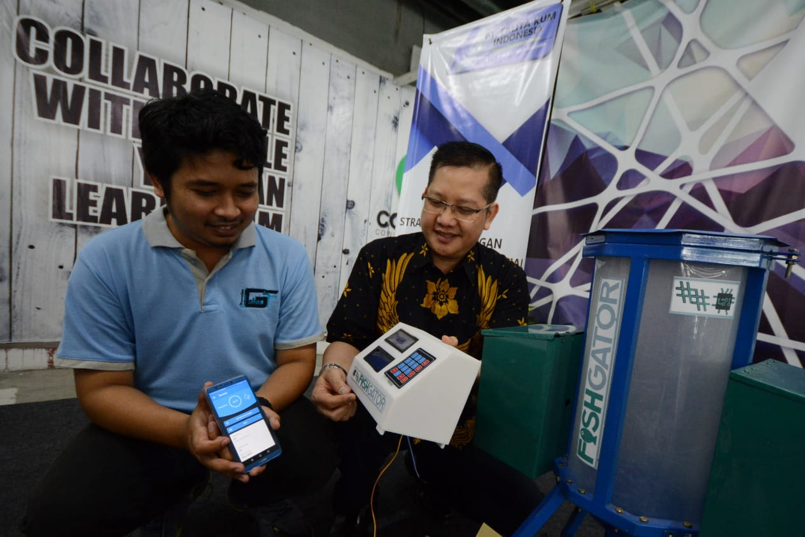
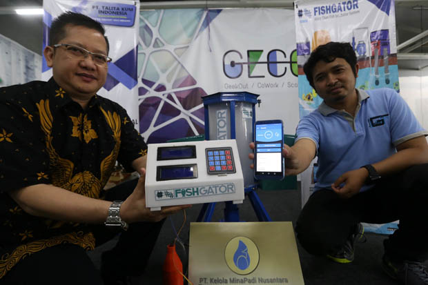

FishGator, Alat Budidaya Ikan Berteknologi Canggih dan Berbasis IOT Menggunakan Smartphone
FishGator merupakan alat budidaya ikan dengan konsep teknologi yang mulai dikembangkan kepada peternak ikan.
FishGator dirancang oleh Yudhis Thiro Kabul Yunior menawarkan kemudahan untuk mengajak para milenial berdikari menjadi pembudidaya ikan.
Yudhis Thiro mengatakan, jarang ada anak muda yang mau menggeluti bidang pertanian lantaran malu dan menilai usaha tersebut tidak menggunakan teknologi canggih.
"Harapannya anak-anak millenial tidak malu-malu lagi terjun ke dunia perikanan, karena sistemnya sudah berbeda," jelas Yudhis Thiro Kabul Yunior.
"Ada otomatis, canggih dan teknologi. Karena regenerasi pertanian penting tapi datanya di lapangan, sangat lambat sekali karena mereka malu istilahnya identik jadul,".

Semuanya, mampu meningkatkan angka survival sampai 70 persen. Jadi kita bisa optimasi hasil panen dengan cara yang sangat mudah. Semua diatur dan nanti ada notif melalui aplikasi bawaan yang terintegrasi dengan internet. Kapan waktunya ikan makan, Ph nya berapa, semua bisa diatur. Jadi petani ikan tidak perlu keluar banyak tenaga. itu bisa diaplikasikan ke semua kolam termasuk bioflog
Keuntungannya jelas, dengan harga sekitar 8 juta dua kali panen sudah BEP. Optimalisasi panen jelas didapat, hitungannya satu kilo pakan itu untuk satu kilo daging ikan. Angka Survival ikan juga duatas 70% dibanding budidaya konvensional yang hanya berada diangka 50% kebawah," katanya Irwanto yang juga pembina bisnis start up dan UKM di Surabaya ini.
Setidaknya, fisgator sudah di trial di beberapa wilayah seperti Bondowoso, Jember dan Banyuwangi dengan 48 kolam ikan yang terdiri dari ikan Nila, ikan Lele, dan ikan Gurame.
"Kami juga kerjasama dengan komunitas petani ikan millenial di berbagai daerah Jatim, juga pesantren. Kami berikan kemudahan untuk dapat menggunkan alat ini, bisa beli putus, bisa kerjasama dengan bagi hasil panen dalam bentuk ikan ataupun rupiah. Kami juga siapkan bekal maintance alat ini kepada para petani.
